Your music.
Your server.
SoundBase is a free, open-source player for Navidrome and OpenSubsonic. It feels right at home on iPhone, Apple Watch and Mac.
iPhone (iOS 18+) · Apple Watch (watchOS 11+) · Mac (macOS 15+)
See screenshots ↓Everything you love about a music app.
Your own library, with the listening experience you expect.
Made For You
Favourites and Discovery mixes, artist and genre stations, and “You Might Also Like” suggestions from your own library.
Time-synced lyrics
Lyrics that follow along line by line. Tap any line to jump to it.
Autoplay & gapless
Seamless track transitions, an Up Next queue you can reorder, and Autoplay that keeps similar music going.
Offline downloads
Download albums and playlists in space-saving AAC or original quality, and listen anywhere.
AirPlay & Google Cast
Send music to AirPlay speakers, Chromecast, Google TV and Nest speakers.
Make it yours
Light and dark modes, 11 accent colours with matching app icons, and a choice of Now Playing backgrounds.
One app. Every Apple device.
Your queue syncs through your server, so you can pick up where you left off.
iPhone
- Home, New, Radio, Library and Search
- Lock Screen, Control Center and Dynamic Island
- AirPlay and Google Cast
Apple Watch
- Download music to your wrist
- Play with Bluetooth headphones, no iPhone needed
- Control what's playing on your iPhone
Mac
- Sidebar library and native song tables
- Lyrics and queue side panel
- Menu bar mini player and keyboard shortcuts
SoundBase screenshots
Explore the app on iPhone, Apple Watch and Mac. Select any screenshot to enlarge it.
iPhone

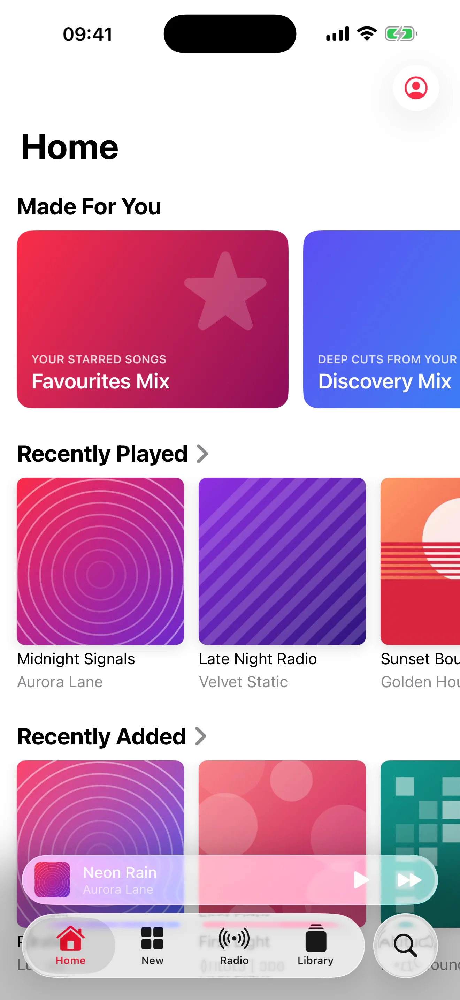

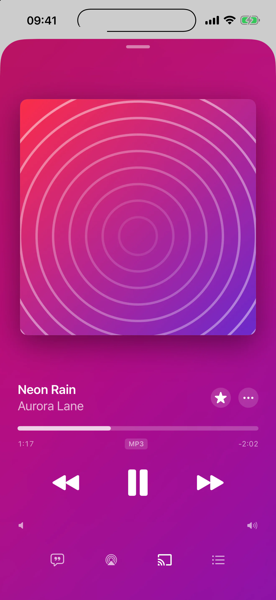

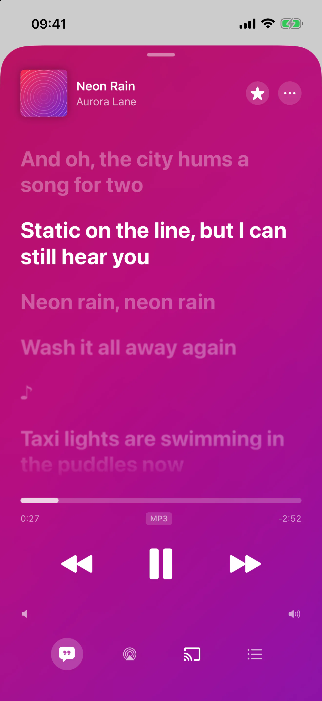

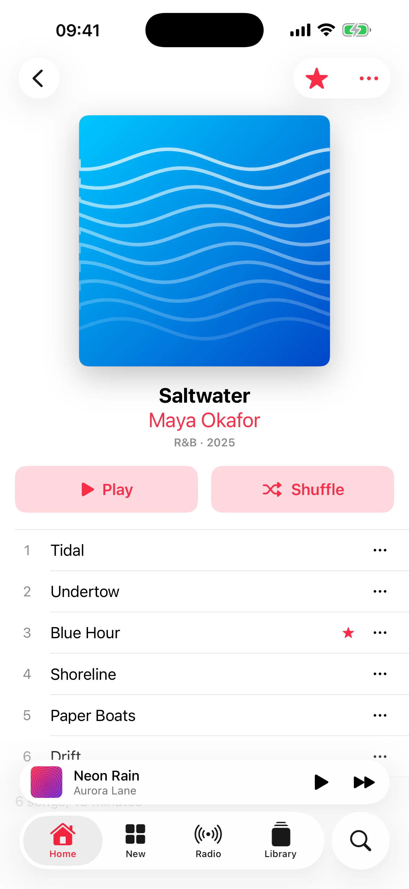

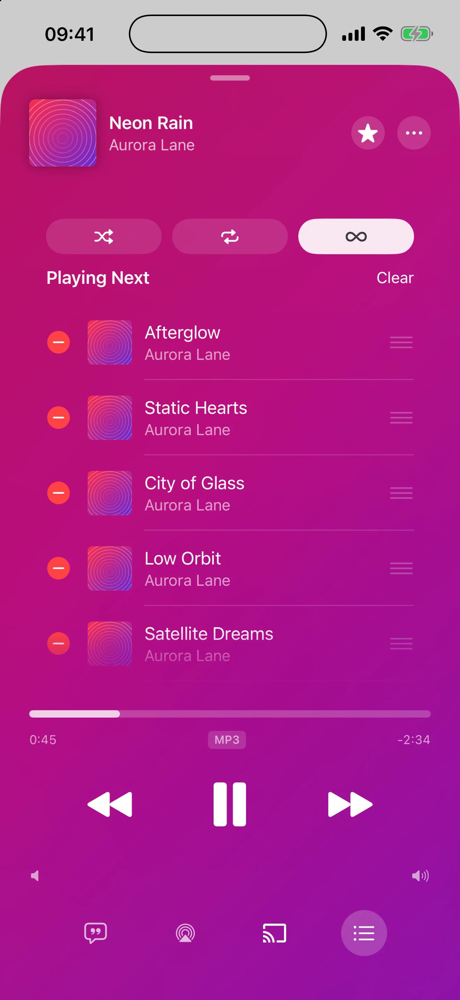

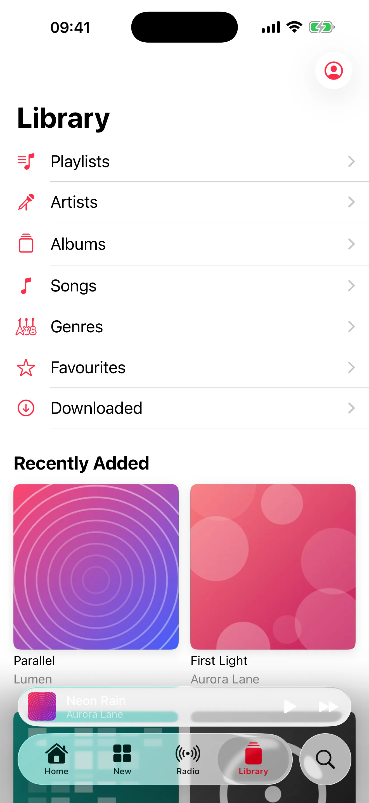

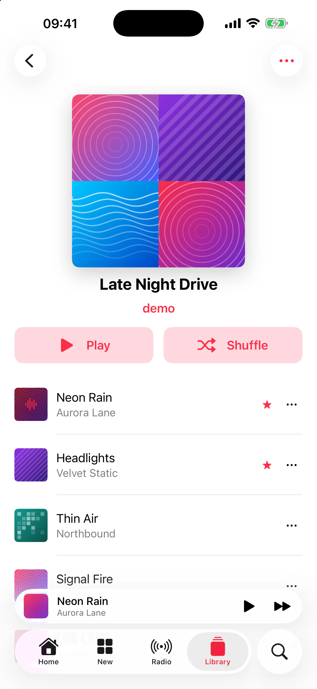

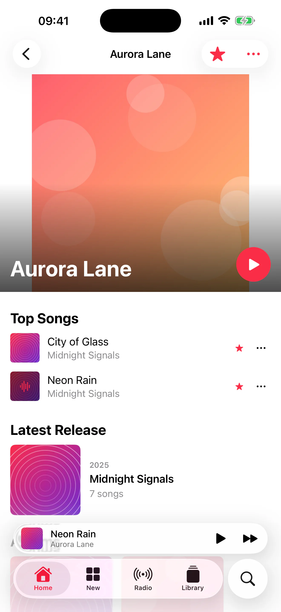

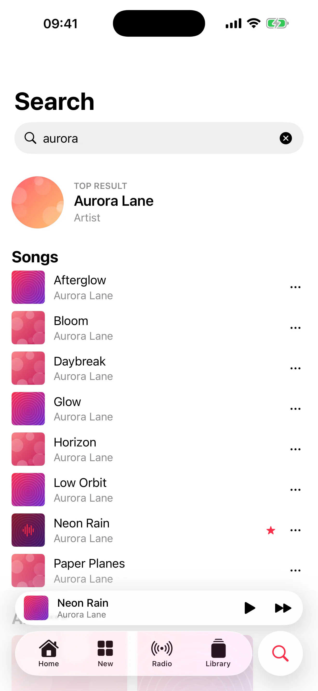
View iPhone overview

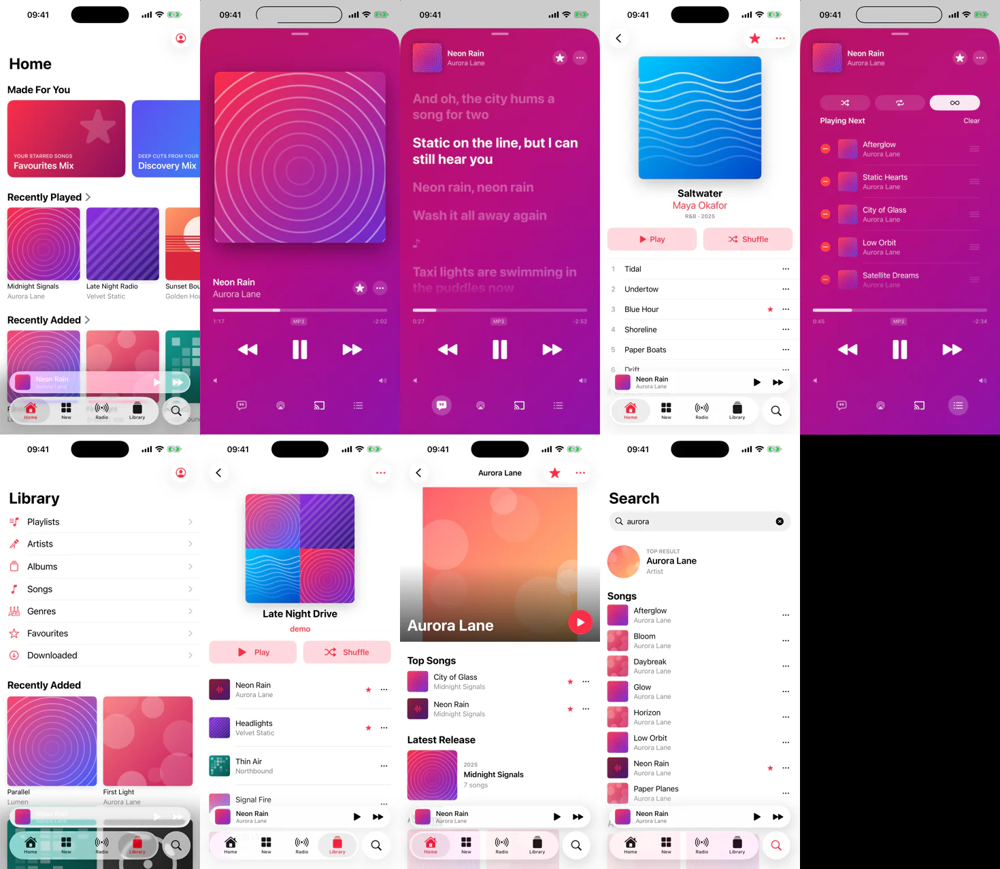
Apple Watch

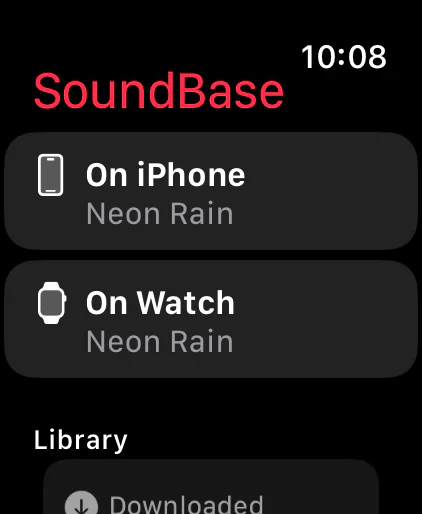

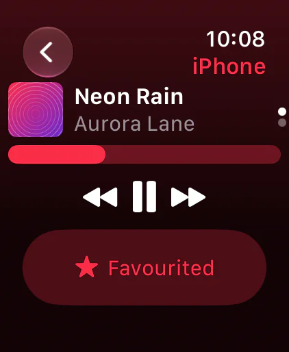

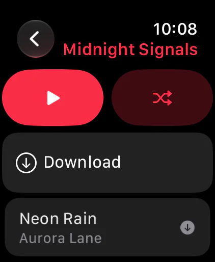

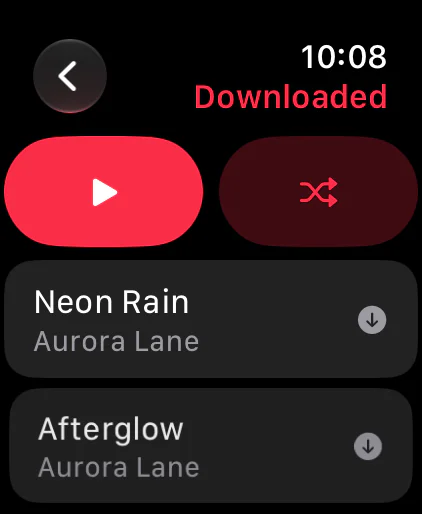

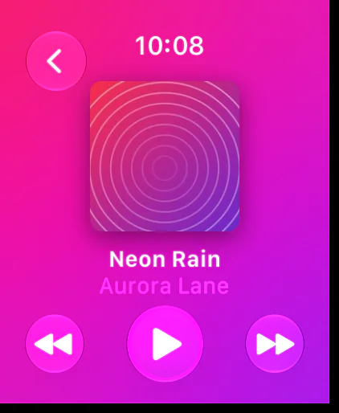
View Apple Watch overview

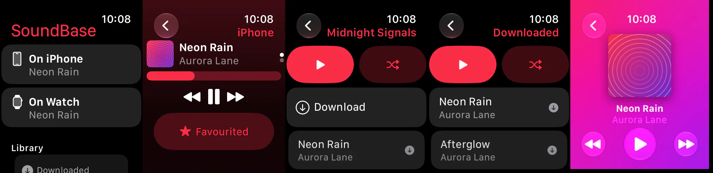
Mac

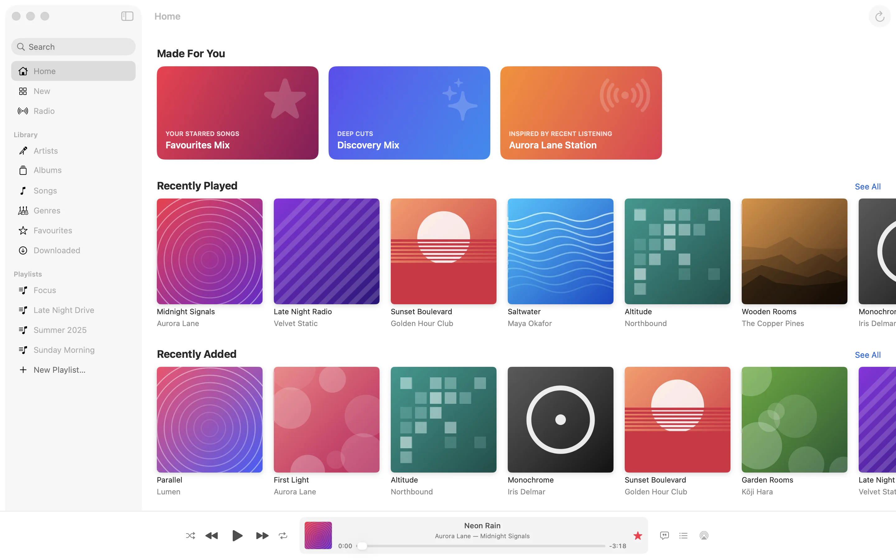

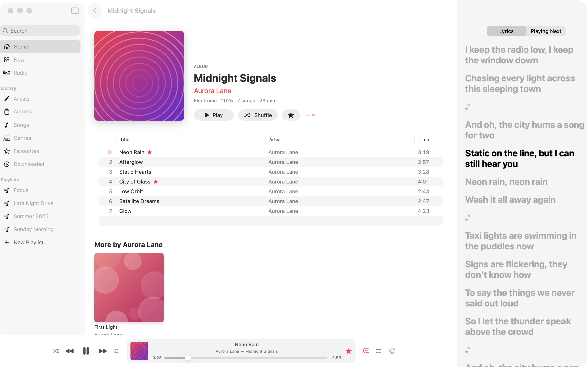

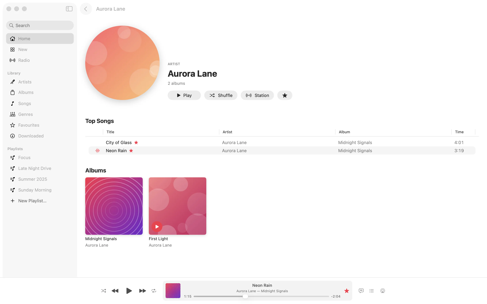

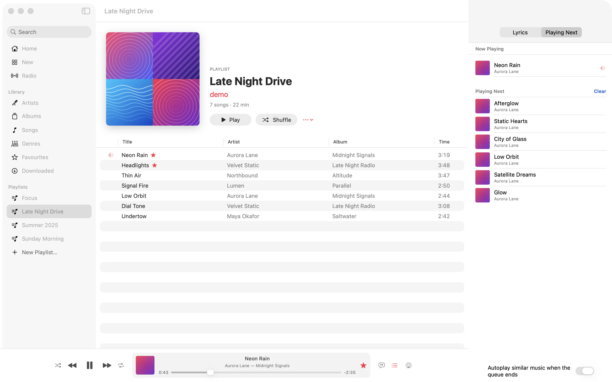

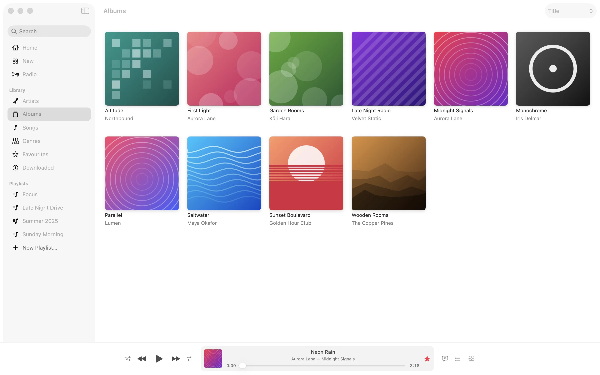
View Mac overview

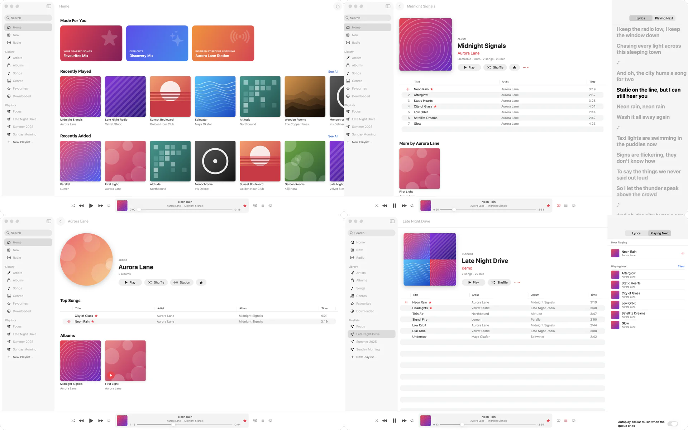
Get SoundBase
Free on the App Store. You'll need a Navidrome server or any OpenSubsonic-compatible server.